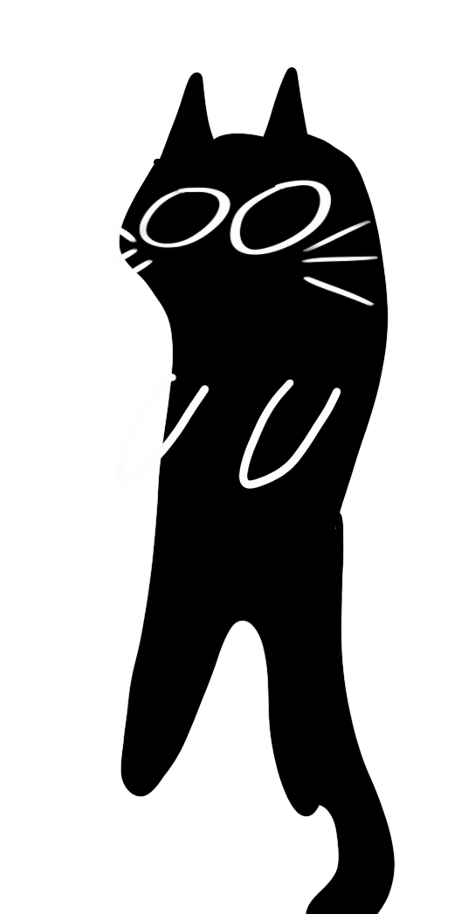
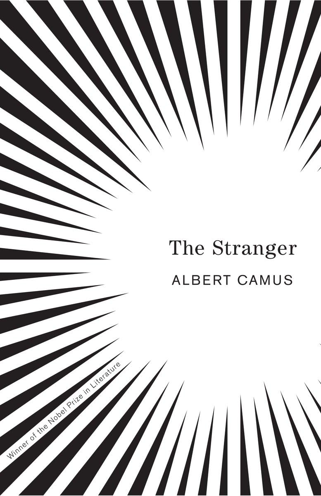

Hi! My name is Micah and I am a first year PhD student in mathematics at the University of Minnesota - Twin Cities. I got my bachelor's in mathematics at UCSD where I worked with Professor Albert Chern on problems in computer graphics and non-Euclidean geometry. I also did a directed reading with Professor Lei Ni on Lie groups. I am primarily interested in problems concerning algebraic geometry and Lie groups.
In my free time I like to go biking(if the weather permits!), reading, watching movies, weight-lifting, knitting, crocheting, drawing, and writing. If you want to see my work not related to math go here! Here are some of my favorite pieces of media:
